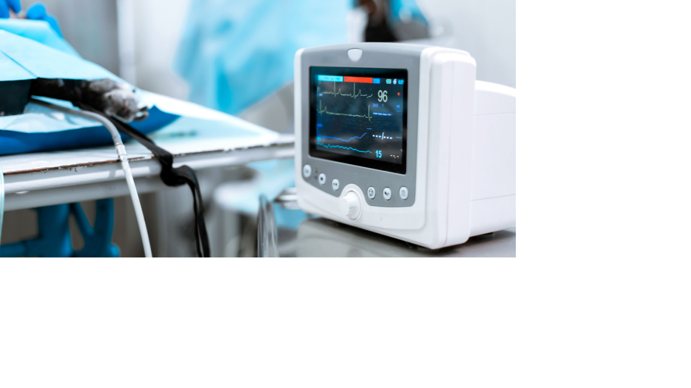

Diploma In ECG Technology: Diploma in ECG technology is a course where the candidate monitors and tests a patient’s cardiovascular performance via ECG equipment. The test is called Electrocardiography. The candidate attaches electrodes to a patient’s body to record the electrical impulses transmitted by a patient’s heart.
As these courses are offered by different institutions, colleges, education centre’s, the eligibility criteria could vary based on them. However, the basic criteria for the course are almost the same everywhere. The candidate should have completed 12th The candidate must have scored at least 50% marks in the 12th board exam The candidate should have studied chemistry, mathematics, and physics in 11th and 12th. Most of the colleges and universities conduct entrance test to enroll candidates into this course, you need to attend and acquire top rank to acquire and admission to this course.
The course duration of this certificate in ECG technician course could vary based on the college or university. However, in general, the course duration is 1-year. This course duration is not split into semesters, the course would end after 1-year and with a final evaluation exam
As already mentioned, this course has a total duration of 1-year and within this year a few subjects are taught that are related to ECG. The subjects/topics are as listed below. Heart diseases – a brief introduction and awareness Cardiovascular diagnosis Human anatomy overview Respiratory system Bioelectricity Skeletal system Cell Cardiovascular system Electronics principles and practice